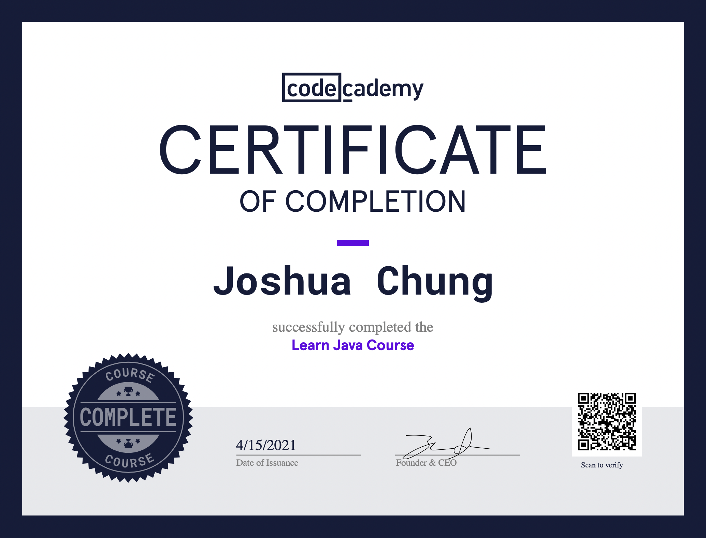

All of my Java experience so far was self-study. It was my first programming language.
I started by taking an online course on the basics of Java. Due to the nature of Java, I also learned Object Oriented Programming concepts along the way. I supplemented my learning with Youtube videos. In the final project, I manipulated images in different ways using my knowledge of 2D arrays.
I found the full 2009 AP test online and took it (with the same time constraints) to test my knowldege.
Score: 5